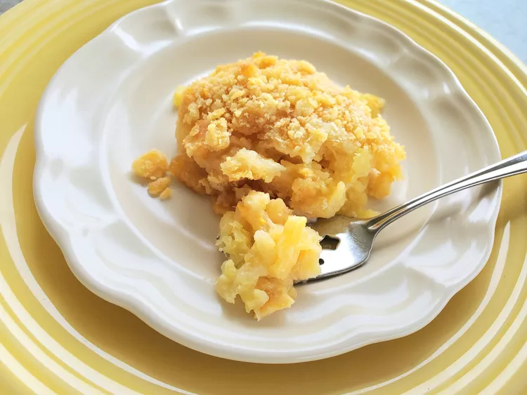

Pineapple casserole

Description
This pineapple casserole recipe is a wonderful blend of savory cheese and sweet pineapple. Excellent side dish, especially for ham or pork. Not too sweet. Serve it hot, warm, or even at room temperature. All my friends have requested this recipe and serve it with their Easter dinners! Yum!
Ingredients
- 1 (20 ounce) can pineapple tidbits, drained
- 1 (20 ounce) can crushed pineapple, partially drained
- 2/3 cup white sugar
- 5 tablespoons all-purpose flour
- 1 stick butter, melted
- 1 1/2 cups shredded orange Cheddar cheese
- 1 sleeve crushed buttery round crackers (such as Ritz)
Steps
- Preheat the oven to 350 degrees F (175 degrees C).
- Mix pineapple tidbits and crushed pineapple together in a bowl and layer into the bottom of a 9x13-inch glass baking dish. Mix sugar and flour together in a bowl and sprinkle mixture over pineapple. Spread cheese on top. Cover everything with crushed crackers. Drizzle with melted butter.
- Bake in the preheated oven until bubbly, 30 to 40 minutes. Serve hot, warm, or at room temperature